All right. Its time for our yearly Six Flags Magic Mtn Summer Update. And as always, we took a ton of tiny little microscopic visits and strung these into our update. Now this one is pretty small due to not going as often as previous years. Because...yeah. I'm broke and busy. But I still had some fun here throughout the summer (also threw in some late Spring visits to pad the update). Now can somebody please tell me the point of a fence that people can just walk around?
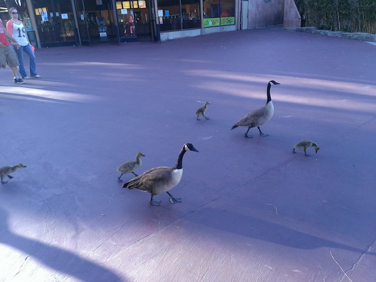
I knew Gertrude and Geoffery Sonic were gonna hook up sooner or later. =)
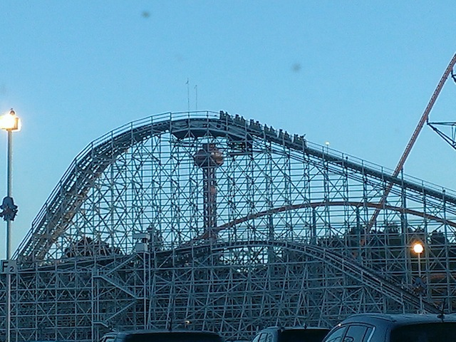
Good news is that Collosus is still going backwards. I like how I got the oppertunity to do it backwards this year to make up for last year. =)
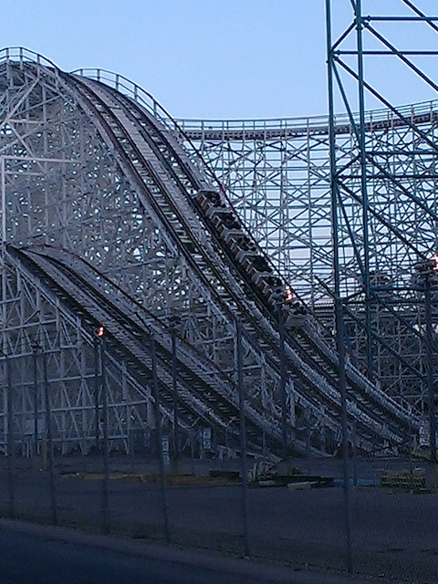
This thing backwards becomes the best wooden coaster in California (not something worth bragging about).
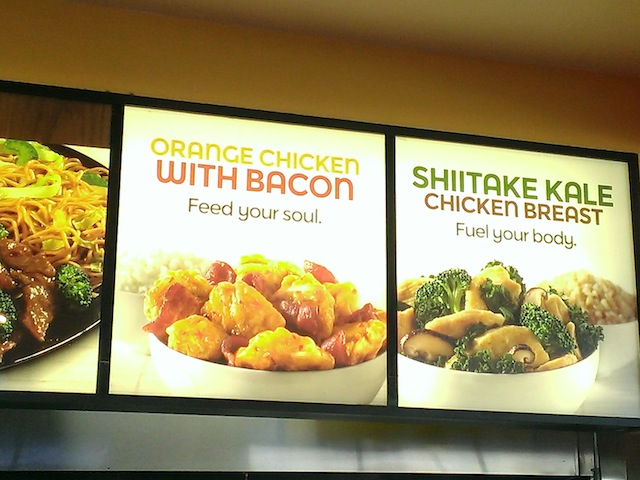
Meanwhile at Panda Express, they're really Americanizing the food by jumping on the Bacon Bandwagon by introducing Orange Chicken with Bacon. I may think the Bacon Bandwagon has gone too far, this is actually really good and replaced Orange Chicken as a Panda Staple for me. =)
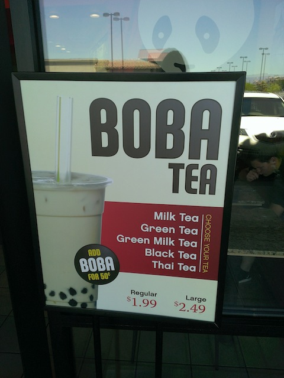
And then there was the Boba Tea. So dissapointed that they got rid of this. WHY!!? IT WAS AMAZING!!! ='(
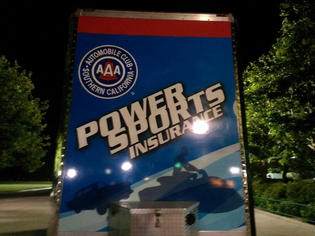
At the last minute, we decided to go to the AAA Private Party since it was only $10 for season pass holders and Cody had AAA membership. And yeah, it was fun.
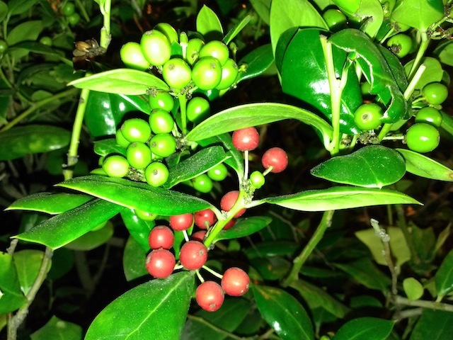
You can tell just how much AAA cares about their customers with this excuisive meal line up they have offered. =)
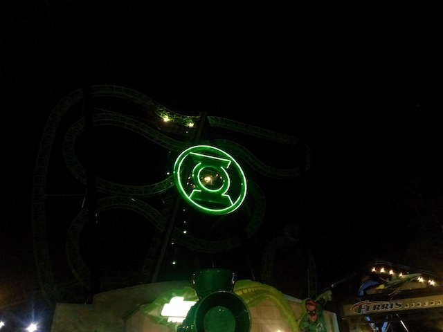
After riding Insane @ Grona Lund this summer, can I please never ride Green Lantern ever again?
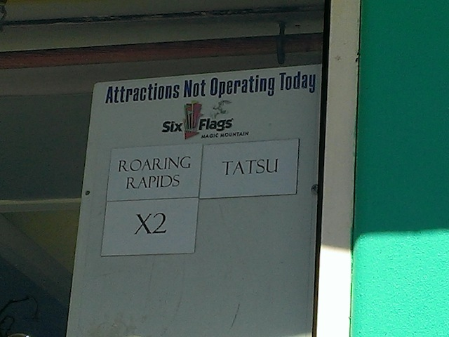
All right. Time for Visit #2 to the park and I hate to say it. But this was without a doubt, the worst day at the park I've had in a long time. I mean, the last time I had a day at Six Flags Magic Mountain that was this bad, Bill Clinton was president. Yeah, that long ago.
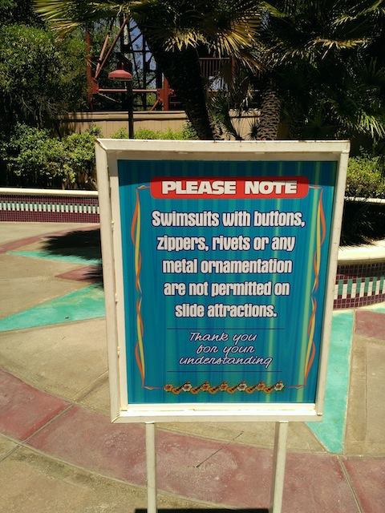
Warning, they're really starting to crack down on rivets over here. I didn't even know my swim suit had rivets until I was forced to do a thorough investigation. Not a fan of having to go to First Aid to get them cut off.
After going 10 years without adding a new ride, Six Flags Hurricane Harbor finally added the Bonzai Pipelines. The blue one is awesome and an excellent Venom Drop Replacement. The orange one however, sucks and just feels like you're being waterboarded the entire way down.
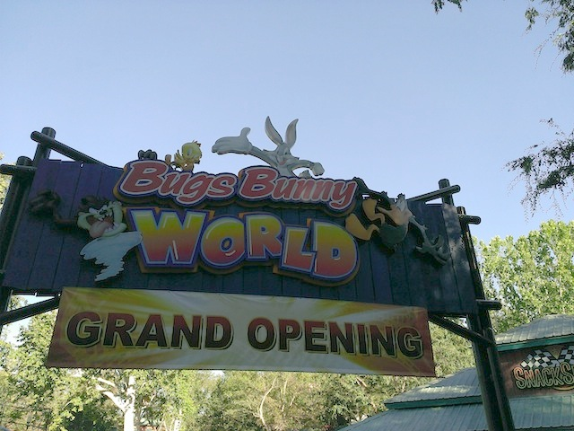
All right. After having fun in Hurricane Harbor, we moved onto Six Flags Magic Mountain. Hmm, now why are we in Bugs Bunny World (Nice New Entrance)?
Yep. That stupid kiddy coaster finally opened up.
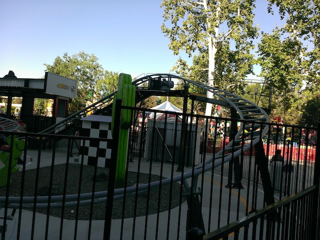
Got the credit. Cha-Ching. Now to ignore it forever.
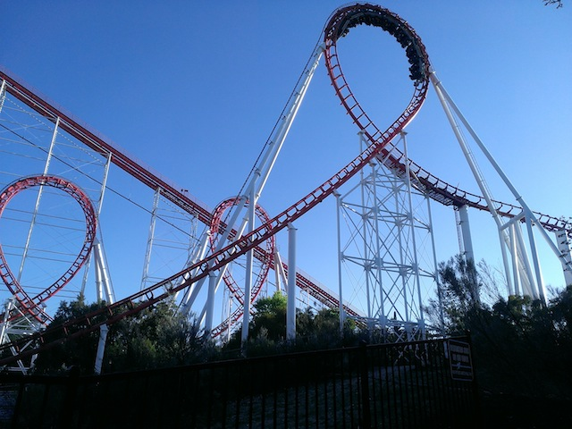
While I was out credit whoring, Cody rode Viper. I was on my way to meet up with him there, when he told me to leave it and that it was running at it's all time worst. Haven't ridden it since or been able to confirm it, but it just saddens me to hear that.
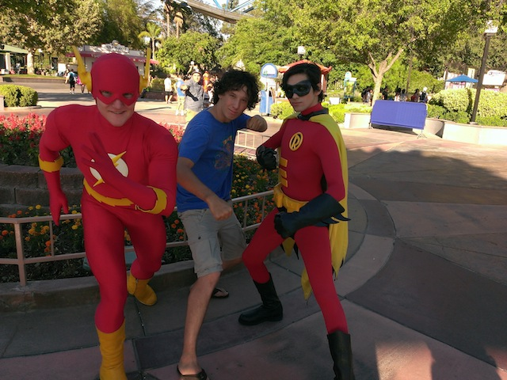
"Hey, everything may be closed and or have horrendous operations, but at least the Flash is still here."
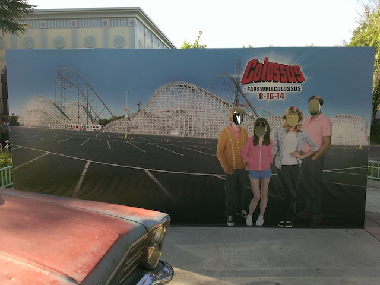
And yeah. Collosus is closing this year (They're REALLY milking the last year thing for Collosus). So better get my rides on it this year.
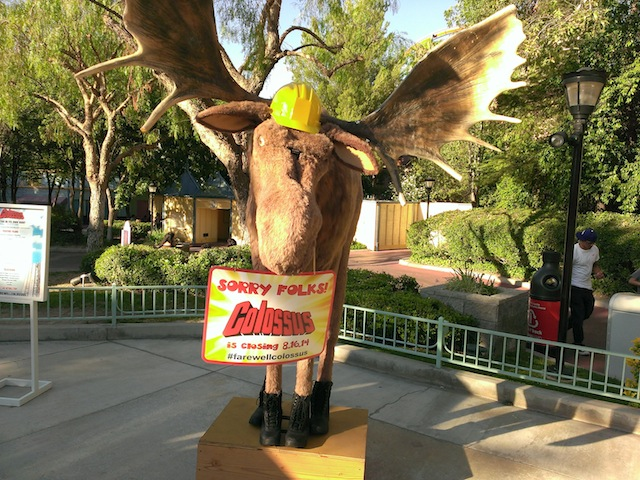
"Didn't the moose out front tell you? Collosus is closed now!!"
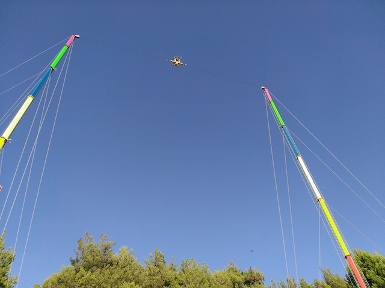
Glad to see that we're still recognized and able to get on Slingshot for free. Being an ex-employee still has its perks. =)
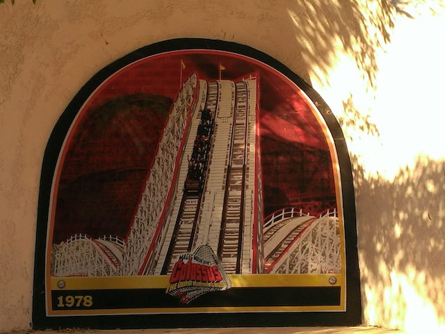
Well that was a short lived memorial. Time to paint it over.
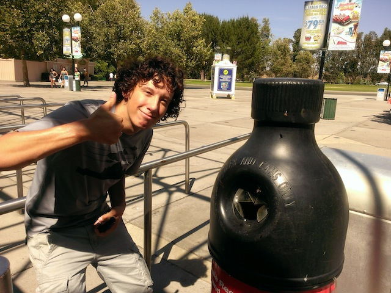
All right. Time for Vist #3. Gotta give props for these new trash cans. These bees are really making a difference.
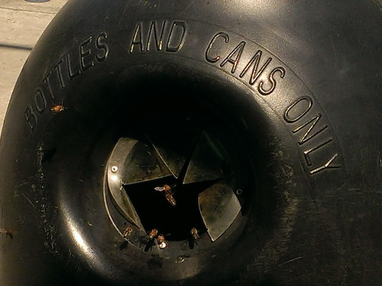
Hey, if even the bees are this into recycling, then there must be something to it.
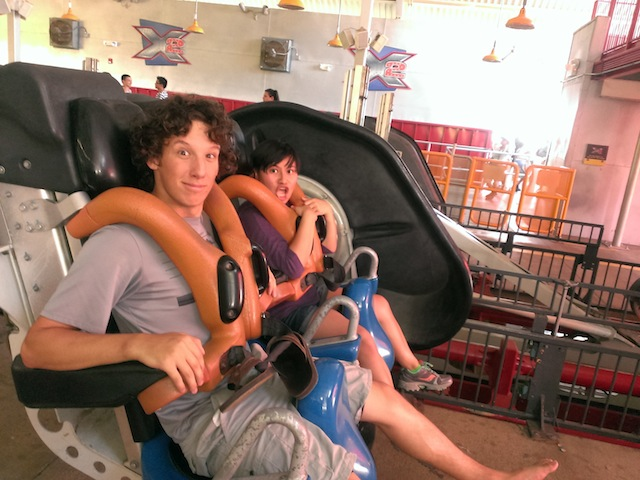
After riding fantastic coasters all over the world, X2 is still a personal favorite of mine. Glad I got many rides on it this summer.
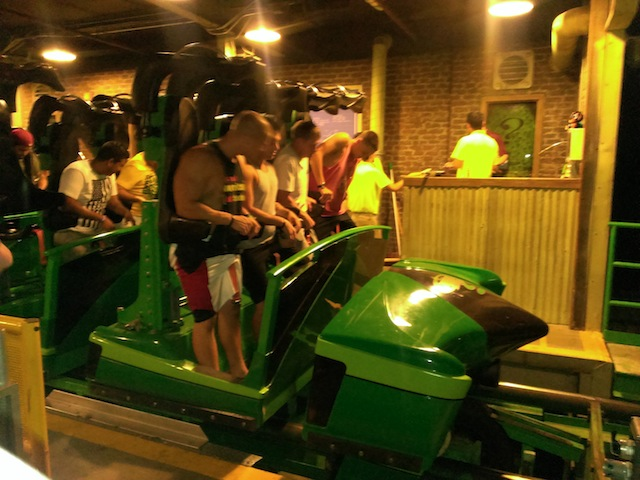
Thank you for sending back the train we loant you for Green Lantern Six Flags Great Adventure. We really needed it.
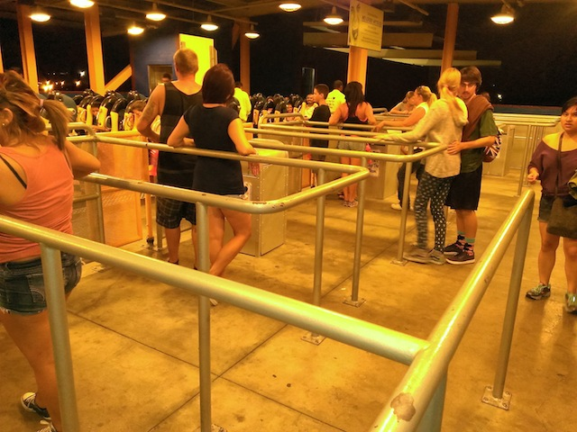
No matter how horribly crowded the park gets, Scream never seems to have a long line.
Six Flags Magic Mountain has learned its lesson. Bad Posture doesn't cause accidents. Trees do.
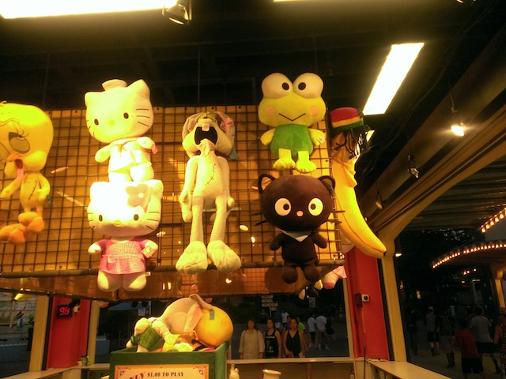
Isn't it a little early to be bringing out the zombie stuffed animals? It's only August.
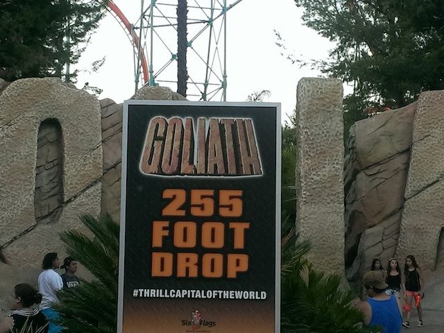
Sad fact. I've actually ridden Titan @ Six Flags Over Texas more recently than Goliath. And that trip was over a year ago!! I gotta get another ride on Goliath.
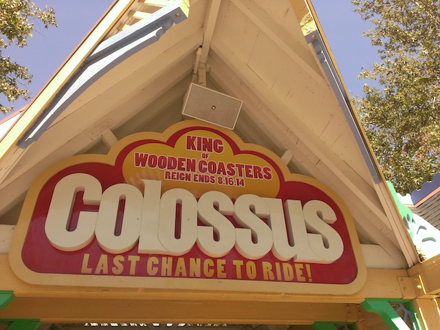
Visit #5. This isn't so much a visit to the park as much as it was just a quick drive by. I was heading down to L.A for other buisness and decided to get my last ride on Collosus that day. I was set up to partake in the Collosus Marathon, but other bullsh*t came up and I had to drop out at the last minute. In hindsight, I should've just did it anyways, but whatever. Let me just get my final Collosus ride.
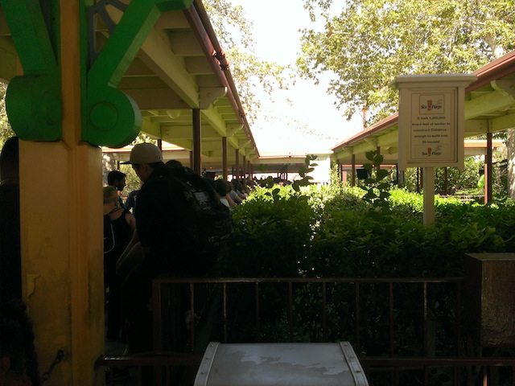
Normally, I would not wait 20 minutes for Collosus, but it's my last ride ever. Plus, it gives me a chance to finish that podcast I was listening to while driving down here and I didn't wait in the truley INSANE line it produced on its last day of operation.
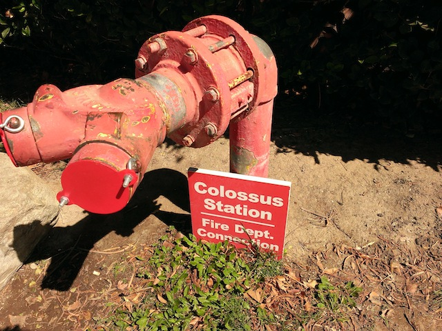
Now that Collosus is no more, is this still necessary?
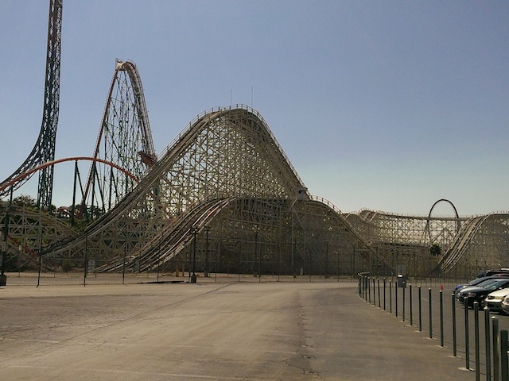
Well, now that I got my last ride on Collosus and it's gone forever. I liked the ride (you can still read my review of it) and even placed it on my Top 10 Most Underrated Coasters List.. However, with the announcement of Twisted Collosus, I do not give a flying f*ck about Collosus at all anymore. Twisted Collosus looks AMAZING, and considering how much I liked all the RMCs I've ridden so far, I've got high expectations for this ride. I haven't been this excited for a new ride at SFMM since they announced X way back in 2001.